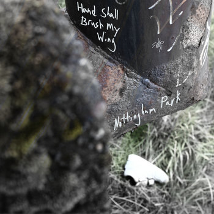

Here are a few various projects I've worked on or been involved in
Nottingham Park was my solo effort. I had a short stay (4 months) in Iceland where I wasn't working and could explore, make music, work on photography, and go to concerts. I put together this album during that time and it was a lot of fun. I wished I could do that full time, but I had to return to the US and get back to work. I still make music, but it's a lot harder to find the time to do so.

Subsol was a free music project I wanted to start coming out of the pandemic. I gathered together some random people that had similar musical interests we set the goal to just jam for a few hours and improvise everything. We played in my basement primarily which I had set up as a makeshift recording studio. I ended up recording the sessions and would chop up a section or two if they ended up being interesting. I then mixed it and added overdubs if it needed it. The sound I was going for was very raw, lots of mic bleed and a live feel. I couldn't really get anything hi-fi in that environment anyway so I leaned in to the raw sound.